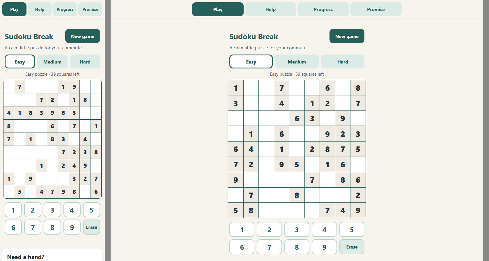
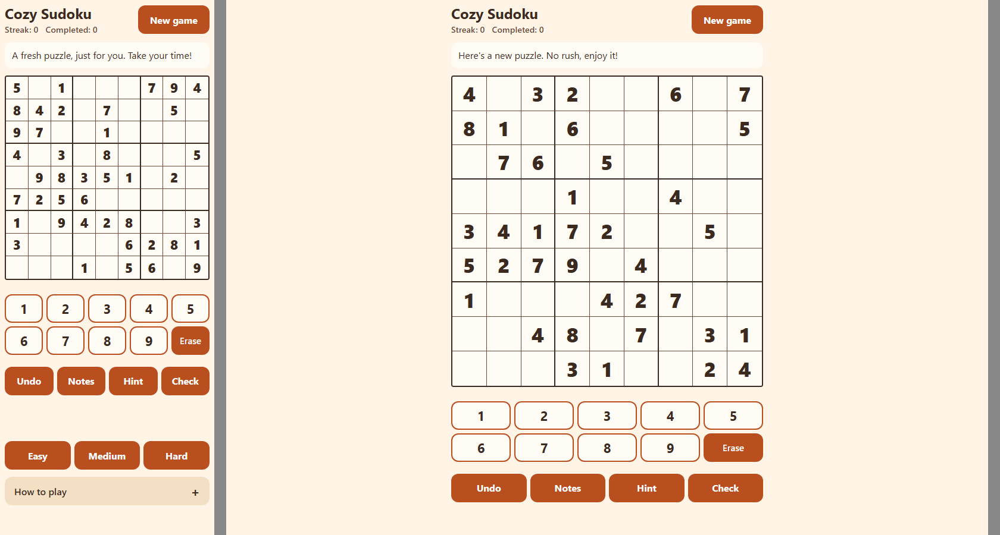

<title>Sudoku Run Comparison</title>
<meta name="claude:viewport-fit-sides" content="cover">
<link rel="preconnect" href="https://fonts.googleapis.com">
<link rel="preconnect" href="https://fonts.gstatic.com" crossorigin>
<link rel="stylesheet" href="https://fonts.googleapis.com/css2?family=Bricolage+Grotesque:opsz,wght@12..96,500;12..96,700&family=Instrument+Sans:wght@400;500;600&family=JetBrains+Mono:wght@400;600&display=swap">
<style>
/* Layout: one reading column; two-column "base | realization" blocks that stack on phones. Slate = base J2, blue = realization, green = certainty, amber = check step, red = problems. */
:root {
  --bg: #f6f7f9; --surface: #ffffff; --fg: #1b2230; --muted: #5b6577; --line: #d9dee7;
  --base: #4a5568; --base-soft: #eceff3;
  --real: #2f5bd3; --real-soft: #e7edfc;
  --cert: #1f8a5b; --cert-soft: #e3f4ec;
  --conf: #b8650f; --conf-soft: #fcefdc;
  --bad: #c0392b; --bad-soft: #fbe6e3;
  --display: "Bricolage Grotesque", "Segoe UI", system-ui, sans-serif;
  --body: "Instrument Sans", "Segoe UI", system-ui, sans-serif;
  --mono: "JetBrains Mono", ui-monospace, Consolas, monospace;
}
@media (prefers-color-scheme: dark) {
  :root:not([data-theme="light"]) {
    --bg: #11151c; --surface: #19202a; --fg: #e6eaf2; --muted: #9aa5b8; --line: #2c3544;
    --base: #b4bfd0; --base-soft: #232b37; --real: #7b9cf5; --real-soft: #1d2a4a; --cert: #4cc28c; --cert-soft: #16332a;
    --conf: #eba253; --conf-soft: #3a2a16; --bad: #ef7a6c; --bad-soft: #3d1f1c; color-scheme: dark;
  }
}
:root[data-theme="dark"] {
  --bg: #11151c; --surface: #19202a; --fg: #e6eaf2; --muted: #9aa5b8; --line: #2c3544;
  --base: #b4bfd0; --base-soft: #232b37; --real: #7b9cf5; --real-soft: #1d2a4a; --cert: #4cc28c; --cert-soft: #16332a;
  --conf: #eba253; --conf-soft: #3a2a16; --bad: #ef7a6c; --bad-soft: #3d1f1c; color-scheme: dark;
}
* { box-sizing: border-box; }
body { background: var(--bg); color: var(--fg); font: 16px/1.6 var(--body);
  padding-left: max(16px, env(safe-area-inset-left, 0px)); padding-right: max(16px, env(safe-area-inset-right, 0px)); padding-block: 40px 80px; }
main { max-width: 960px; margin: 0 auto; display: grid; gap: 56px; }
h1, h2, h3 { font-family: var(--display); line-height: 1.15; text-wrap: balance; margin: 0; }
h1 { font-size: clamp(2rem, 5vw, 2.8rem); letter-spacing: -0.02em; }
h2 { font-size: 1.5rem; }
h3 { font-size: 1.05rem; }
p { margin: 0; max-width: 70ch; }
section { display: grid; gap: 16px; }
ul { margin: 0; padding-left: 20px; display: grid; gap: 6px; }
.eyebrow { font: 600 0.75rem/1 var(--mono); letter-spacing: 0.08em; text-transform: uppercase; color: var(--muted); }
.lede { font-size: 1.1rem; color: var(--muted); }
.note { font-size: 0.9rem; color: var(--muted); }
code, .mono { font-family: var(--mono); font-size: 0.85em; }
.b { color: var(--base); } .r { color: var(--real); } .c { color: var(--cert); } .k { color: var(--conf); } .x { color: var(--bad); }

.verdict { display: grid; gap: 10px; padding: 18px 20px; border-radius: 12px; background: var(--surface); border: 1px solid var(--line); }
.verdict ul { gap: 8px; }

.pair { display: grid; grid-template-columns: repeat(auto-fit, minmax(280px, 1fr)); gap: 16px; }
.col { background: var(--surface); border: 1px solid var(--line); border-radius: 10px; padding: 18px; display: grid; gap: 10px; align-content: start; min-width: 0; }
.col.base { border-top: 4px solid var(--base); }
.col.real { border-top: 4px solid var(--real); }
.col h3 { display: flex; align-items: baseline; gap: 8px; flex-wrap: wrap; }
.tag { font: 600 0.7rem var(--mono); letter-spacing: .05em; text-transform: uppercase; padding: 2px 7px; border-radius: 4px; }
.tag.b { background: var(--base-soft); } .tag.r { background: var(--real-soft); } .tag.c { background: var(--cert-soft); } .tag.k { background: var(--conf-soft); } .tag.x { background: var(--bad-soft); }

.scroll { overflow-x: auto; }
table { border-collapse: collapse; width: 100%; font-size: 0.9rem; }
.tbl { min-width: 620px; background: var(--surface); border: 1px solid var(--line); border-radius: 10px; overflow: hidden; }
th, td { text-align: left; padding: 9px 12px; border-bottom: 1px solid var(--line); vertical-align: top; }
tr:last-child td { border-bottom: 0; }
th { font: 600 0.72rem var(--mono); letter-spacing: 0.06em; text-transform: uppercase; color: var(--muted); background: var(--bg); }
td.num { font-family: var(--mono); font-variant-numeric: tabular-nums; white-space: nowrap; }
th.b, th.r { font-size: 0.75rem; }
th.b { color: var(--base); } th.r { color: var(--real); }
.win { font-weight: 600; }

.bars { display: grid; gap: 12px; }
.bar-row { display: grid; grid-template-columns: 150px 1fr; gap: 12px; align-items: center; font-size: 0.88rem; }
.bar-track { display: grid; gap: 4px; }
.bar { height: 14px; border-radius: 4px; position: relative; }
.bar.b { background: var(--base); } .bar.r { background: var(--real); }
.bar-label { font: 600 0.75rem var(--mono); font-variant-numeric: tabular-nums; }

.timeline { display: grid; gap: 0; list-style: none; padding: 0; margin: 0; }
.timeline li { display: grid; grid-template-columns: 74px 1fr; gap: 12px; padding: 9px 0; border-bottom: 1px solid var(--line); font-size: 0.9rem; }
.timeline li:last-child { border-bottom: 0; }
.timeline .when { font: 600 0.75rem var(--mono); color: var(--muted); padding-top: 2px; }

.shots { display: grid; grid-template-columns: repeat(auto-fit, minmax(300px, 1fr)); gap: 16px; }
figure { margin: 0; display: grid; gap: 8px; min-width: 0; }
figure img { width: 100%; height: auto; border-radius: 8px; border: 1px solid var(--line); background: var(--surface); }
figcaption { font-size: 0.88rem; color: var(--muted); }

.flag { display: grid; gap: 6px; padding: 14px 16px; border-radius: 8px; border-left: 4px solid var(--conf); background: var(--conf-soft); font-size: 0.93rem; }
.flag.bad { border-color: var(--bad); background: var(--bad-soft); }
.flag.good { border-color: var(--cert); background: var(--cert-soft); }

.issues { display: grid; grid-template-columns: repeat(auto-fit, minmax(280px, 1fr)); gap: 12px; }
.issue { background: var(--surface); border: 1px solid var(--line); border-radius: 10px; padding: 14px; display: grid; gap: 6px; align-content: start; font-size: 0.9rem; }
.issue strong { font-family: var(--display); font-size: 1rem; }
footer { font-size: 0.85rem; color: var(--muted); border-top: 1px solid var(--line); padding-top: 16px; display: grid; gap: 6px; }
@media (max-width: 480px) { .bar-row { grid-template-columns: 1fr; gap: 4px; } }
</style>

<main>
<header style="display:grid; gap:14px">
  <span class="eyebrow">J2 · Adaptation experiment · 24 Oct 2026</span>
  <h1>Same Sudoku brief, two Adaptations</h1>
  <p class="lede">One run of today's J2, then one run with realization and certainty switched on. Same brief, same model, same budget, run one after the other. Both finished with a workable game. This page shows where the two flows planned, built and spent differently.</p>
  <div class="verdict">
    <span class="eyebrow">In short</span>
    <ul>
      <li><strong class="r">Planning went much deeper.</strong> Before anything was built, realization listed 13 factors (5 the brief never mentioned), cut the work into product, design and engineering, wrote 5 decisions, and its check step sent 2 rounds of revisions. Base planned 5 workflows in about a minute.</li>
      <li><strong class="r">Its first build was cleaner.</strong> Realization's first Audit passed all 8 of its done-when items. Base's first Audit failed resume (1 of 10).</li>
      <li><strong>The games are close in quality.</strong> Both always make puzzles with exactly one solution, and both make them instantly. Realization's Hard is a little harder (fewer clues). Realization put every helper on the main screen and added a streak and games-completed counter. Base kept best times.</li>
      <li><strong class="b">Base was faster and cheaper.</strong> 19 minutes, 37 AI calls and 119 credits, against 42 minutes, 67 calls and 128 credits. Realization spent 15½ of its minutes and 11 calls planning.</li>
      <li><strong class="x">The run exposed four problems in our integration</strong>, listed at the end. None stopped the run, but two mean the plan was followed less closely than it looks.</li>
    </ul>
    <p class="note">One run each. AI output varies from run to run, so read this as a first look, not a result. An earlier attempt at the same comparison, stopped by a memory shortage, showed the same pattern.</p>
  </div>
</header>

<section>
  <span class="eyebrow">1 · The setup</span>
  <h2>Identical inputs, one switch different</h2>
  <div class="scroll"><table class="tbl">
    <thead><tr><th>Setting</th><th>Both runs</th></tr></thead>
    <tbody>
      <tr><td>Brief</td><td>"Build me a Sudoku game as a single web page. It's for casual players who play a quick game on their phone, like on a commute. It should feel friendlier than the cluttered Sudoku sites out there, and I want people to enjoy it enough to come back. Include a few difficulty levels and whatever helps a beginner without spoiling the puzzle. Keep it to one file, with no sign-up and no ads. You decide the details; tell me what you chose."</td></tr>
      <tr><td>Model</td><td><code>claude-sonnet-5-5</code> through <code>claude-cli</code></td></tr>
      <tr><td>Budget</td><td>200 work credits; no lessons or playbooks from earlier runs (<code>J2_MEMORY=0</code>)</td></tr>
      <tr><td>Only difference</td><td><code>J2_REALIZATION=0</code> (base) vs <code>=1</code> (realization)</td></tr>
      <tr><td>Order</td><td>Base 21:13–21:32, then realization 21:33–22:14, one at a time to keep the load low</td></tr>
      <tr><td>Questions</td><td>Neither Identity asked the Requester anything. No budget approvals were needed in either run.</td></tr>
    </tbody>
  </table></div>
  <div class="flag">
    <strong>One thing differed that the switch doesn't control: the charter</strong>
    <span>Each run's Identity wrote its own charter from the brief. Base got 10 done-when items (it asked for best times and 44px cells). Realization got 8 (it asked for a mistake check, a streak or games-completed counter, and warm colours). Some differences in the output come from this, not from Adaptation.</span>
  </div>
</section>

<section>
  <span class="eyebrow">2 · The numbers</span>
  <h2>Cost and effort</h2>
  <div class="bars" role="img" aria-label="Bar comparison of minutes, AI calls, credits, cycles and page size">
    <div class="bar-row"><span>Minutes</span><div class="bar-track">
      <div class="bar b" style="width:45%"></div><span class="bar-label b">Base 19</span>
      <div class="bar r" style="width:100%"></div><span class="bar-label r">Realization 42 (15½ planning)</span></div></div>
    <div class="bar-row"><span>AI calls</span><div class="bar-track">
      <div class="bar b" style="width:55%"></div><span class="bar-label b">Base 37</span>
      <div class="bar r" style="width:100%"></div><span class="bar-label r">Realization 67 (11 planning)</span></div></div>
    <div class="bar-row"><span>Credits used (of 200)</span><div class="bar-track">
      <div class="bar b" style="width:59.5%"></div><span class="bar-label b">Base 119</span>
      <div class="bar r" style="width:64%"></div><span class="bar-label r">Realization 128</span></div></div>
    <div class="bar-row"><span>Plan, build, audit cycles</span><div class="bar-track">
      <div class="bar b" style="width:75%"></div><span class="bar-label b">Base 3</span>
      <div class="bar r" style="width:100%"></div><span class="bar-label r">Realization 4</span></div></div>
    <div class="bar-row"><span>Final page size</span><div class="bar-track">
      <div class="bar b" style="width:75%"></div><span class="bar-label b">Base 61 KB</span>
      <div class="bar r" style="width:100%"></div><span class="bar-label r">Realization 81 KB</span></div></div>
  </div>
  <p class="note">Bars are scaled to the larger value in each row, except credits, which are scaled to the 200 budget. J2's guideline for a single page is about 60 KB; both went over.</p>
</section>

<section>
  <span class="eyebrow">3 · How Adaptation planned</span>
  <h2>One minute of grouping vs fifteen minutes of thinking</h2>
  <div class="pair">
    <div class="col base">
      <h3><span class="b">Base J2</span><span class="tag b">1 min · 1 proposal</span></h3>
      <p>Grouped the 10 done-when items into the smallest set of workflows:</p>
      <ul>
        <li>Game board, number pad and difficulty <span class="note">(items 1–3)</span></li>
        <li>Beginner help and hint <span class="note">(4–5)</span></li>
        <li>Completion message and saved progress <span class="note">(6–7)</span></li>
        <li>No sign-up, no ads promise <span class="note">(8)</span></li>
        <li>Phone-first styling and navigation <span class="note">(9–10)</span></li>
      </ul>
      <p class="note">No factors, no decisions written down, no reading of what was uncertain. Choices such as how difficulty works were left to each builder. Priority granted all five for 95 credits.</p>
    </div>
    <div class="col real">
      <h3><span class="r">Realization</span><span class="tag r">15½ min · 11 calls</span></h3>
      <p><strong>Certainty reading:</strong> <span class="tag c">analyze</span>. Facts and patterns are known, but several valid choices are open, so decide first and then build.</p>
      <p><strong>Stages:</strong> product, design, engineering, build.</p>
      <p><strong>Plan:</strong> 5 decide workflows and 9 build workflows. The check step scored it 0.85 after 2 revision rounds, which split 3 workflows by kind of thinking and rewrote 5 done-tests.</p>
      <p><strong>Sent into J2:</strong> 7 build workflows. The decisions go to the builders.</p>
    </div>
  </div>

  <h3>Factors realization listed before planning</h3>
  <div class="scroll"><table class="tbl">
    <thead><tr><th>Factor</th><th>From</th><th>Stage that owns it</th></tr></thead>
    <tbody>
      <tr><td>Mobile-first with large tap targets</td><td>brief</td><td>design</td></tr>
      <tr><td>Friendly warm look, encouraging wording, few controls</td><td>brief</td><td>design</td></tr>
      <tr><td>One file, plain HTML/CSS/JS, no build step</td><td>brief</td><td>engineering</td></tr>
      <tr><td>No sign-up, login, account or ads</td><td>brief</td><td>engineering</td></tr>
      <tr><td>Hints guide without giving the answer</td><td>brief</td><td>product</td></tr>
      <tr><td>Progress stored only on the player's device</td><td>brief</td><td>engineering</td></tr>
      <tr><td>Features that make people want to come back</td><td>brief</td><td>product</td></tr>
      <tr><td>Several difficulty levels</td><td>brief</td><td>product</td></tr>
      <tr><td class="r"><strong>Every puzzle has exactly one solution</strong></td><td class="r">general (not in the brief)</td><td>engineering</td></tr>
      <tr><td class="r"><strong>Difficulty levels feel different</strong></td><td class="r">general</td><td>product</td></tr>
      <tr><td class="r"><strong>Storage may be unavailable or corrupt</strong></td><td class="r">general</td><td>engineering</td></tr>
      <tr><td class="r"><strong>Puzzle generation is fast on a phone</strong></td><td class="r">general</td><td>engineering</td></tr>
      <tr><td class="r"><strong>Warm palette stays readable</strong></td><td class="r">general</td><td>design</td></tr>
    </tbody>
  </table></div>

  <h3>The decisions written before building</h3>
  <div class="scroll"><table class="tbl">
    <thead><tr><th>Decision</th><th>Stage</th><th>What it settled</th></tr></thead>
    <tbody>
      <tr><td>Scope and return-visit features</td><td>product</td><td>Three levels. Easy 38–45 clues and must be solvable with simple techniques; Medium 30–36; Hard 24–29, only unique. A streak and games-completed counter for coming back. Stated openly that clue ranges and technique limits are assumptions, because there was no web access to check them.</td></tr>
      <tr><td>Hint and help rules</td><td>product</td><td>A hint marks exactly one empty cell and explains why from templates. It never shows a value, never changes notes and is not an undo step. An optional mistake check.</td></tr>
      <tr><td>Look and layout</td><td>design</td><td>A warm palette with contrast ratios computed for every pair, grid sizing, and main-screen order. It worked out that 44px cells can't fit a 360px screen and wrote down the trade-off.</td></tr>
      <tr><td>Encouraging wording</td><td>design</td><td>The game's name (Cozy Sudoku, marked as an assumption), every control label, and every message, each 12 words or fewer.</td></tr>
      <tr><td>Single-file architecture and data model</td><td>engineering</td><td>File order, element ids, state fields, generator and solver, how progress is stored, and what is banned.</td></tr>
    </tbody>
  </table></div>
  <p class="note">The full text is in <code>runs/realization/j2-20261024-213253/decisions.md</code>. Two more entries in that file, "Beginner helps" and "How to play section", should have been built as workflows, not written up as decisions. See problem 1 at the end.</p>
</section>

<section>
  <span class="eyebrow">4 · Building and checking</span>
  <h2>What each Audit found</h2>
  <div class="pair">
    <div class="col base">
      <h3><span class="b">Base J2</span><span class="tag b">3 cycles</span></h3>
      <ol class="timeline">
        <li><span class="when">Cycle 1</span><span>5 workflows built. Audit: 9 of 10 items pass. <span class="x">Resume is broken:</span> restoring redraws the board, but the game state still belongs to a new puzzle. Condition N6 is flagged.</span></li>
        <li><span class="when">Cycle 2</span><span>1 fix (resume through the game's load step). Priority refused a cell-width change for a section the fix didn't own. Audit: all items pass; only N6 remains.</span></li>
        <li><span class="when">Cycle 3</span><span>2 fixes: pad digits drawn by CSS, and the timer says "Ready" until play starts. Audit: everything met. <strong>Done.</strong></span></li>
      </ol>
    </div>
    <div class="col real">
      <h3><span class="r">Realization</span><span class="tag r">4 cycles</span></h3>
      <ol class="timeline">
        <li><span class="when">Cycle 1</span><span>Only 5 of the 7 planned workflows reached Priority. The generator and the hint were dropped by J2's validator, re-proposed and funded in the same cycle. Audit: <span class="c">all 8 items pass.</span> Conditions N6 and N8 (nav and one main action) are flagged.</span></li>
        <li><span class="when">Cycle 2</span><span>2 fixes: resume called a function that was never defined, and a labelled nav was added with one New game action. Audit: all pass; only N6 remains.</span></li>
        <li><span class="when">Cycle 3</span><span>2 fixes: a race in resume, and counters written by script. Audit: N6 is still flagged by the number-pad digits.</span></li>
        <li><span class="when">Cycle 4</span><span>1 fix: number-pad digits drawn by script. Audit: everything met. <strong>Done.</strong></span></li>
      </ol>
    </div>
  </div>
  <p class="note">N6 ("no invented content") flagged ordinary Sudoku digits in both runs. Audit called it a false positive both times, but code still required it. That cost each run a cycle that had nothing to do with Adaptation.</p>
</section>

<section>
  <span class="eyebrow">5 · The output</span>
  <h2>The two finished games</h2>
  <div class="shots">
    <figure>
      
      <figcaption><strong class="b">Base: "Sudoku Break"</strong>. Green, calm, with a 4-tab nav (Play, Help, Progress, Promise). The level buttons sit above the grid. Undo, notes and hint are further down the page, under "Need a hand?".</figcaption>
    </figure>
    <figure>
      
      <figcaption><strong class="r">Realization: "Cozy Sudoku"</strong>. Warm orange, a streak and games-completed counter in the header, an encouraging message, and Undo, Notes, Hint and Check right under the number pad. Levels and a folded "How to play" are below.</figcaption>
    </figure>
  </div>
  <p class="note">Audit's own screenshots of each final version, at 360px (left half) and 1280px (right half).</p>

  <div class="scroll"><table class="tbl">
    <thead><tr><th>What the player gets</th><th class="b">Base</th><th class="r">Realization</th></tr></thead>
    <tbody>
      <tr><td>Levels</td><td>Easy, Medium, Hard (42, 34, 28 clues)</td><td>Easy, Medium, Hard (38–45, 30–36, 24–29 clues)</td></tr>
      <tr><td>Helpers on the main screen</td><td>Number pad and erase; undo, notes and hint lower on the page</td><td class="win">Number pad, erase, Undo, Notes, Hint, Check, all within thumb reach</td></tr>
      <tr><td>Hint</td><td>Points to a cell and explains the reasoning in words</td><td>Marks one cell and explains why, from fixed templates; never a value</td></tr>
      <tr><td>Mistake check</td><td>Clashing digits are marked</td><td>Clashing digits are marked, plus an optional Check button</td></tr>
      <tr><td>Reasons to come back</td><td>Saved game and best times per level</td><td>Saved game, a streak and games-completed counter</td></tr>
      <tr><td>Tone</td><td>Calm and neutral ("A calm little puzzle for your commute")</td><td>Warm and encouraging ("A fresh puzzle, just for you. Take your time!")</td></tr>
      <tr><td>Grid cells at 360px</td><td>About 37px wide, 44px tall</td><td>About 37px. The design decision wrote this down in advance</td></tr>
      <tr><td>Page size</td><td class="win">61 KB</td><td>81 KB</td></tr>
    </tbody>
  </table></div>
</section>

<section>
  <span class="eyebrow">6 · Hidden checks</span>
  <h2>Puzzle quality, tested in headless Chrome</h2>
  <p>Neither run was told about this test. It generated 10 puzzles per level with each game's own generator, counted the solutions with an independent solver, checked whether simple techniques (naked and hidden singles) solve each puzzle, and timed the generator.</p>
  <div class="scroll"><table class="tbl">
    <thead><tr><th>Level</th><th class="b">Base: clues</th><th class="b">Unique</th><th class="b">Simple techniques solve it</th><th class="r">Realization: clues</th><th class="r">Unique</th><th class="r">Simple techniques solve it</th></tr></thead>
    <tbody>
      <tr><td>Easy</td><td class="num">42</td><td class="num">10/10</td><td class="num">10/10</td><td class="num">38–45</td><td class="num">10/10</td><td class="num">10/10</td></tr>
      <tr><td>Medium</td><td class="num">34</td><td class="num">10/10</td><td class="num">10/10</td><td class="num">30–36</td><td class="num">10/10</td><td class="num">9/10</td></tr>
      <tr><td>Hard</td><td class="num">28</td><td class="num">10/10</td><td class="num">9/10</td><td class="num">24–29</td><td class="num">10/10</td><td class="num">8/10</td></tr>
      <tr><td>Time per new puzzle</td><td colspan="3">About 1 ms</td><td colspan="3">About 1 ms</td></tr>
    </tbody>
  </table></div>
  <p>Both games guarantee one solution, so the two runs reached the same answer on the most important quality point. The difference is in the reasoning behind it. Realization <strong>decided and documented</strong> that only Easy is held to simple techniques and Hard is just fewer clues, and called both choices assumptions to check. Base used clue counts alone without saying so. In both games, Hard is still mostly solvable with simple techniques. A player looking for a real challenge would notice.</p>
</section>

<section>
  <span class="eyebrow">7 · What realization and certainty changed</span>
  <h2>Where the axes showed up in the work</h2>
  <div class="pair">
    <div class="col real">
      <h3 class="r">Changed</h3>
      <ul>
        <li><strong>Unasked quality factors were planned for:</strong> uniqueness, levels that feel different, broken storage, generation speed, readable colours.</li>
        <li><strong>Choices were made once and written down</strong> (levels, hint rules, palette, wording, data model) instead of each builder guessing.</li>
        <li><strong>The work was cut by kind of thinking.</strong> The check step split a mixed look-and-wording workflow into design-look and design-wording, and split beginner helps from the hint.</li>
        <li><strong>Trade-offs were found before building:</strong> 44px cells can't fit at 360px; difficulty by technique is only enforced for Easy.</li>
        <li><strong>A cleaner first build:</strong> all done-when items passed in cycle 1.</li>
      </ul>
    </div>
    <div class="col base">
      <h3 class="b">Didn't change</h3>
      <ul>
        <li><strong>Feature depth stayed with the charter.</strong> Identity set what got built in both runs. Adaptation still doesn't add features.</li>
        <li><strong>Integration bugs between builders still happened:</strong> a resume function that was never defined, and a race on load, despite the written data model.</li>
        <li><strong>J2's own checks set the finishing pace.</strong> The N6 false positive cost both runs an extra cycle.</li>
        <li><strong>Puzzle quality ended up about the same.</strong> Base also guaranteed uniqueness without being told.</li>
        <li><strong>Certainty read the whole goal as <code>analyze</code>.</strong> "Enjoy it enough to come back" did not become a probe (<code>experiment</code>). It was decided as features: a streak and a counter.</li>
      </ul>
    </div>
  </div>
</section>

<section>
  <span class="eyebrow">8 · To fix in our implementation</span>
  <h2>Four problems this run exposed</h2>
  <div class="issues">
    <div class="issue"><span class="tag x">bug</span><strong>Build work filed as a decision</strong>"Beginner helps" and "How to play" were build-stage workflows that delivered no done-when item, because each item has exactly one deliverer. Our code treats any workflow that delivers nothing as a decision, so they were written up instead of built. The features appeared only because another builder covered item 4. <span class="note">Fix: a build-stage workflow is always built.</span></div>
    <div class="issue"><span class="tag x">gap</span><strong>The planner doesn't know J2's conditions</strong>J2 warned twice that nothing covered N8 (nav and one main action), and that cost a fix cycle. <span class="note">Fix: give the planner and the check step <code>conditions/website.json</code>.</span></div>
    <div class="issue"><span class="tag k">friction</span><strong>The validator drops the hardest workflows</strong>The generator and the hint (2 of 7 planned) were dropped before Priority, most likely over their check fields. They came back in the same cycle, but the plan wasn't followed as one piece. <span class="note">Fix: pass the plan's done-test into J2's atom check format, or retry those workflows on their own.</span></div>
    <div class="issue"><span class="tag k">limit</span><strong>Decisions aren't enforced as contracts</strong>The data-model decision named the state and functions, yet one builder called a function nobody defined. Builders read decisions but nothing checks them. <span class="note">Fix: turn each decision's "rules for builders" into checks in the workflows that read it.</span></div>
  </div>
  <p class="note">Also known from earlier tests: the check step's scores can flip between judgings (paused, at your founder's direction), and planning adds about 15 minutes and 11 calls per goal.</p>
</section>

<footer>
  <span>Runs: <code>runs/base/j2-20261024-211320</code> and <code>runs/realization/j2-20261024-213253</code> in <code>Documents\J2_Realization</code>. Each holds chat.jsonl, workflows.json, audits.json, summary.json and the site with its versions; the realization run also has realization.md and decisions.md.</span>
  <span>Hidden checks: 10 puzzles per level through each game's own generator (<code>SudokuBreak.newGame</code> and <code>CozySudoku.generatePuzzle</code>), with an independent solution counter and a singles-only solver, in headless Chrome.</span>
</footer>
</main>
